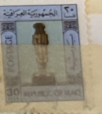
| SOURCE | TITLE| IMAGE MATCH | click to source page |
| eBay | ANTIQUE ENGRAVING EGYPTIAN MUMMIES | eBay | 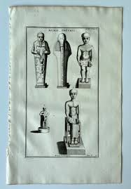 |
| Open Library | Gaston Maspero | Open Library | 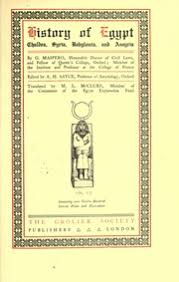 |
| Hayman Hafez (hafezhayman) - Profile | Pinterest | 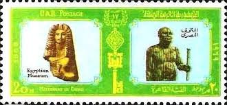 | |
| Amazon.eg | Art ancient Egypt statue of God khonsu the God of the moon and protection made of polystone: Buy Online at Best Price in Egypt - Souq is now Amazon.eg | 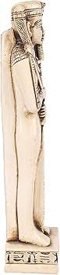 |
| eBay | Egypt 1125-1228a, MNH. Michel 808-811. Post Day 1980. Pharaonic Capitals. | eBay | 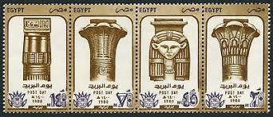 |
| Amazon.ae | Statue of sekhmet the God of healing made of polystone , 2725615102496: Buy Online at Best Price in UAE - Amazon.ae | 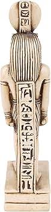 |
| Amazon.com.be | Egyptian Goddess Isis Polystone Statue : Amazon.com.be: Home & Kitchen | 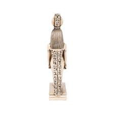 |
| Amazon.com | Amazon.com: Art ancient Egypt statue of God khonsu the God of the moon and protection made of polystone : Home & Kitchen | 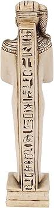 |
| Etsy | Thoth Statue - Handmade Statue From Egypt - Ancient Egyptian God of Wisdom & Knowledge - Etsy | 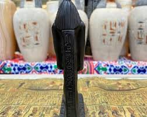 |
| Alamy | Body priest hi-res stock photography and images - Alamy | 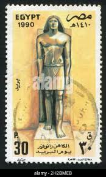 |
| Mohamed Hisham (hisham1314) - Profile | Pinterest | 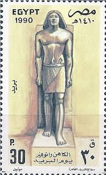 | |
| Etsy | Fantastic Queen Tiye Holding the Lotus Flower Made From Sandstone With Amazing Gold Leaf - Replica - Our Item is Made With Egyptian Soul - Etsy Canada | 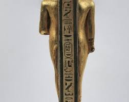 |
| World History Encyclopedia | Ptah - World History Encyclopedia | 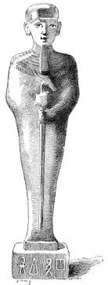 |
| HipStamp | USA 3066A MNH ERROR JACQUELINE COCHRAN, BLACK OMITTED CAT VAL. $45.00 / HipStamp | 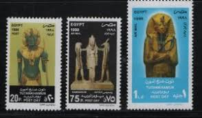 |
| Etsy | Egyptian Thoth Statue: God of Wisdom, Made in Egypt - Etsy Denmark | 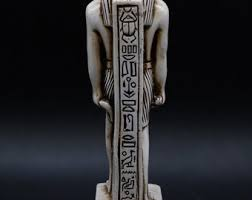 |
| Etsy | God Ptah Statue: Egyptian Creator Sculpture Replica - Etsy | 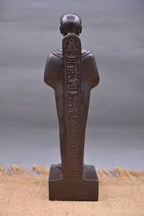 |
| Etsy | Egyptian Heqet With the Double Crown: Egypt's Enchanting Frog Goddess of Fertility and Rebirth - Etsy | 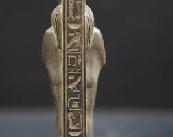 |
| Alfurat Website | Books - Alfurat Website | 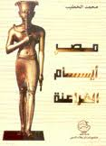 |
| PICRYL | Amulet of Venus and Mars - PICRYL - Public Domain Media Search Engine Public Domain Search | 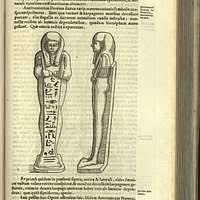 |
| Amazon.ae | Ancient Egyptian statue of Ptah is an ancient Egyptian deity, a creator god and patron of craftsmen and architect. Unique blue color stone made in Egypt.: Buy Online at Best Price in | 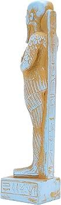 |
| Internet Sacred Text Archive | Secret Teachings of All Ages: Isis, the Virgin of the World | Internet Sacred Text Archive | 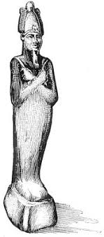 |
| worldstageme.com | Egyptian Pharaoh Hand Carved | 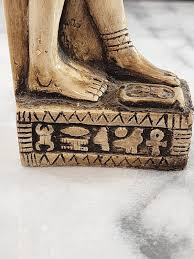 |
| Etsy | Replica Egyptian Sekhmet - Lion Goddess Statue for Sale - Etsy | 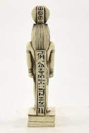 |
| Etsy | Statue of the God Thoth. Lord Thoth. God of Wisdom and Writing in Ancient Egypt. Egyptian Statue Available in Two Sizes. Made in Egypt - Etsy | 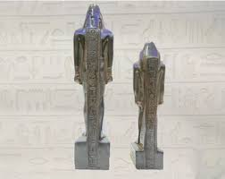 |
| Amazon.ca | Statue of khnum Egyptian Goddess of the Nile and fertility in form of Ram made of polystone : Amazon.ca: Home | 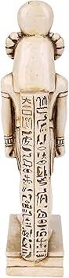 |
| eBay | Khonsu God Statue Egyptian Moon Ancient Rare Antiquities Stone Pharaonic Rare BC | eBay | 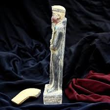 |
| Etsy | Ra Statue. Statue of the God Ra in Black Brilliantly Made in Egypt - Etsy | 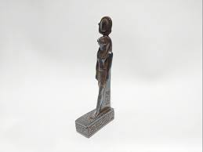 |
| Amazon.eg | Polystone Statue of Anubis, 2725615238683: Buy Online at Best Price in Egypt - Souq is now Amazon.eg | 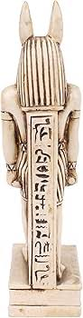 |
| Etsy | Unique Statue of Egyptian God Khepri Scarab Sun God Made in Egypt - Etsy | 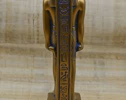 |
| eBay | Rare Antique Ancient Egyptian God sobek Protection Army War Soldiers 2480 BC | eBay | 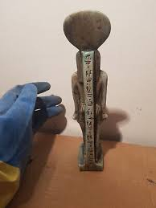 |
| eBay | Rare Egyptian Antiques Apep Statue Ancient Pharaonic God of Chaos Rare Antiques | eBay | 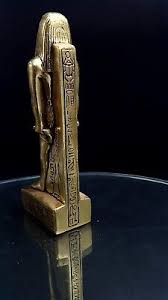 |
| eBay | Rare Antique Ancient Egyptian King, offer Flower Wife Sacred Book Dead 2480 BC | eBay | 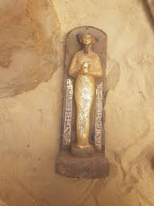 |
| eBay | Osiris Statue In Egyptian Antiquities for sale | eBay | 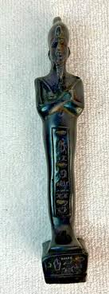 |
| eBay | Rare Antique Pharaonic Apep God of Chaos Egyptian Statue Ancient BC Antiques BC | eBay | 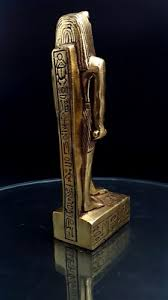 |
| Biblio UK | LAMINA V34762: Estatua y cilindros de Tutankamon by Varios | 1929 | Espasa Calpe | Biblio UK | 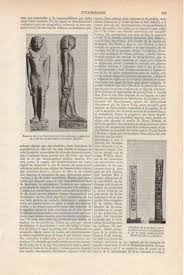 |
| Etsy | 13"/33cm Hand-carved God Horus Statue Made in Egypt - Large Ancient Egyptian Falcon God Statue - Etsy Denmark | 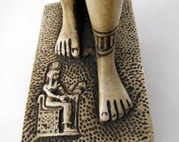 |
| Amazon.ae | Goddess Sekhmet Whose Lioness Head with a Woman's Body Has The Eye of The Sun God Pharaohs Ancient Egyptian Statue: Buy Online at Best Price in UAE - Amazon.ae | 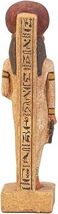 |
| Etsy | Egyptian Statue of Akhenaten (amenhotep IV) Black 2 Size Made in Egypt - Etsy New Zealand | 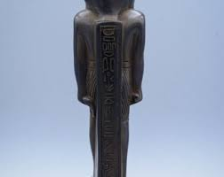 |
| Etsy | Egyptian Heqet With the Double Crown: Egypt's Enchanting Frog Goddess of Fertility and Rebirth - Etsy Australia | 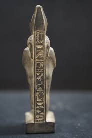 |
| Etsy | Egyptian Moon God Khonsu Statue 3 Style Made in Egypt - Etsy Australia | 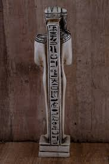 |
| 18th Dynasty Egypt | 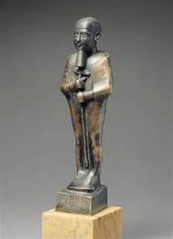 | |
| egyptology.store | The God of Fertility and Sexuality – Min (Phallic) – Bull of the Great Phallus – Handmade Altar statue of lime stone – Made in Egypt – Egyptology | 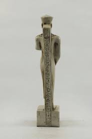 |
| eBay UK | Unique Osiris Statue Depicting the God of the Underworld with Crook and Flail | eBay UK | 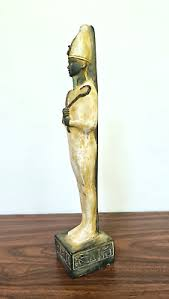 |
| Miramalika (miramalika09) - Profile | Pinterest | 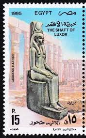 | |
| preterhuman.net | Halls of Amenti | 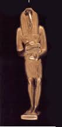 |
| eBay | Paper Money And 4 Stamp Egypt -Statue of K. Abr, priest, 5th cent. ) - MNH** | eBay | 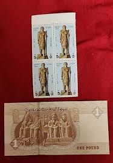 |
| Ancient Egyptian sarcophagi: grandeur and cultural significance | 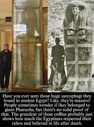 | |
| Amazon.com | Amazon.com: Unique statue of the Egyptian Lord Ptah-Hotep wearing a featherd , Minster and Philosopher made of heavy Stone : Home & Kitchen | 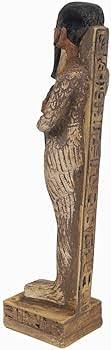 |
| Amazon.com | Amazon.com: Polystone Statue of Horus, 2725615222941 : Toys & Games | 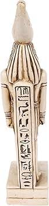 |
| eBay | RARE ANCIENT EGYPTIAN ANTIQUE ANUBIS Stand Stone Statue (B+) | eBay | |
| eBay | Votive Altar Statue of Egyptian God PTAH standing & holding the stick | eBay | |
| eBay | Very Large Egyptian God MIN ( phallic )the god of fertility | eBay | |
| eBay | 1923 Antique Egyotian Book كتاب الأدب والدين عند قدماء المصريين - انطون زكري | eBay | |
| 1stDibs | Egyptian Sculptures - 28 For Sale at 1stDibs | ancient egyptian statues for sale, egyptian sculpture for sale, egyptian sculptures for sale | |
| Etsy | Unique Egyptian Handmade Altar Statue of Khonsu the God of Moon & Time Standing and Holding the Stick - Our Item is Made With Egyptian Soul - Etsy | |
| eBay | Khonshu: Egypt's Moon God of Protection and Illumination | eBay | |
| Amazon.eg | Ancient Egyptian statue of goddess Bastet cat standing heavy stone gold leaf hand painted made in Egypt. Bastet in her late form of a cat-headed woman, rather than a lioness.: Buy Online | |
| eBay | Ancient Egyptian Antiques BC Isis Goddess of Fertility Pharaonic Rare BC | eBay | |
| Etsy | Golden Ptah Statue: Egyptian God of Craftsmen Collectible, Made in Egypt - Etsy | |
| Etsy | Handmade Silver Leaf Egyptian Statue: Apophis Serpent of Chaos - Etsy |